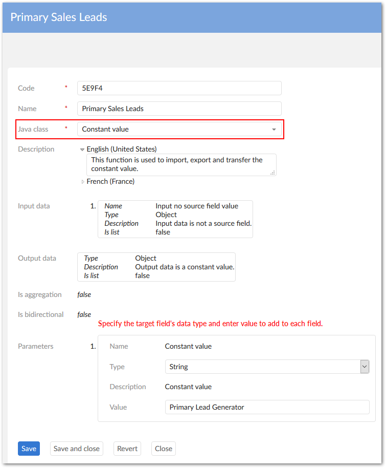
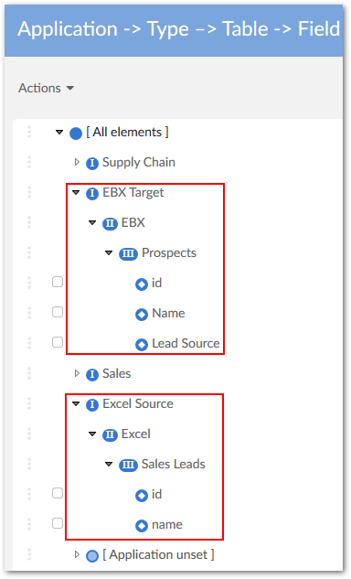
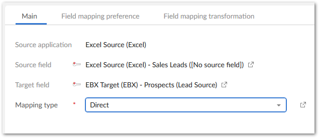
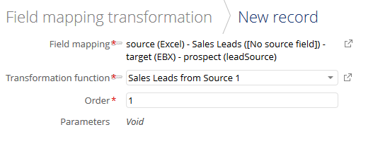
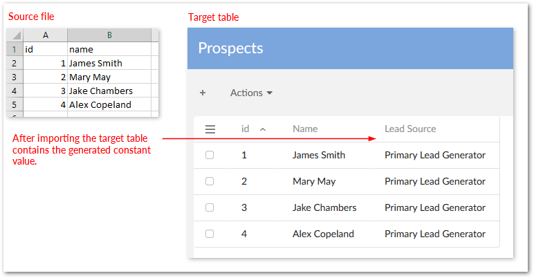

The add-on allows you to populate a column's fields with a single pre-defined value during import, export, or transfer. You specify the value in the add-on mapping configuration. The example shown below demonstrates the feature with an import.
The add-on automatically creates a new column containing the constant value that isn't mapped with a column in the source.
This example demonstrates how to generate a constant value while importing data. However, you can use similar steps for export and transfer. For example, a company needs to track where sales leads come from. Lead generators provide Excel spreadsheets that do not indicate their source. The target EBX® table has a column specifying whether the lead came from an internal department, or external vendor. Internal leads should be labeled 'primary' and external leads 'secondary'. To add the primary or secondary label, identify the lead generator, create a transformation function, map source and target fields, and specify the constant value.
To create a mapping that uses a transformation function to generate a constant value:
Navigate to Administration > Integration > TIBCO EBX® Data Exchange Add-on > Reference data > Transformation function and create a new transformation function that uses the Constant Value Java class. See the image below for the sample values used in this example.

Navigate to Administration > Integration > TIBCO EBX® Data Exchange Add-on > Application and create source and target applications in the Application table and use the Application by type view to associate them with the appropriate types. In this example we are importing from a source spreadsheet, so we created one Excel type application (source) and one EBX type application (target). For the EBX type, you must provide the path to the published data model that the target dataset is based on.
In the Application by type table, run the Generate models service for both application types and choose Data model for both. You'll need to point to the file and provide a little information when generating the models for the Excel file. You can view your results to compare with the expected outcome. The image below shows the generated tables and fields used in this example. Notice that the source does not include the field that designates where the leads come from.

Use the Interface and Application interface preference tables to create an interface between the source and target applications and an application interface preference, respectively. If you have any questions about options, mouse over the label and open the tooltip for more information.
Use the corresponding tables in the Data mapping domain to create the table mapping, field mappings, and preferences for both. When creating the field mapping for the field using the transformation function:
The Source field must use the source's [No source field] option. The following image highlights the field used in this example.

Indicate the appropriate target field.
Save, but do not close.
Select the Field mapping transformation tab and create a new transformation using the previously defined transformation function. Once you've selected the function from the list, save to refresh the page and enter any required values.

Save and close out to finish the configuration.
After completing the configuration, users need to use the Preferences option to load the correct preferences for this transformation mapping. The image below shows the results from our example.
